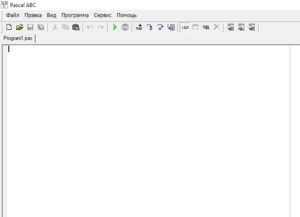
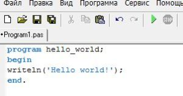
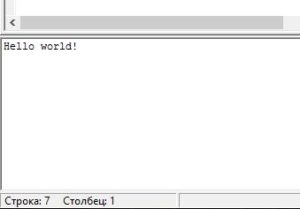
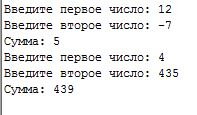

Введение в программирование
Добро пожаловать, уважаемые начинающие программисты! Сегодня мы с вами начнём изучать основы программирования. А именно, начнём с алгоритмов. Есть три вида алгоритма: линейный, ветвление, циклический. Алгоритм — это определённая последовательность команд или инструкций. Линейный алгоритм — это алгоритм, который следует друг за другом. Пример алгоритма решения задачи по физике по шагам:
- Прочитать задачу
- Записать данные из задачи
- Перевести величины в систему интернациональную при необходимости
- В решении записать и вывести нужные формулы
- Сделать количественный расчёт
Таким образом, алгоритм представляет собой чёткий план конкретной задачи не только из физики, но и из жизни вообще. К примеру алгоритмом также может являться кулинарный рецепт, где по шагам объясняется как приготовить пищу. Разветвляющие алгоритмы — это алгоритмы, выполняющиеся при определённом условии. К примеру, в математике мы не можем извлекать квадратный корень из отрицательного числа. Поэтому изначально здесь надо сделать проверку числа. Так же можно ещё привести пример с дорогой. Если налево повернёшь, то в лес попадёшь, если направо — в деревню. Если надо использовать множественное ветвление, то лучше использовать оператор выбора. Оператор выбора может быть полезен при составлении меню в каком-либо приложении. Циклические алгоритмы — это алгоритмы, которые необходимы для многократного выполнения определённого участка программы. Циклы могут применяться, к примеру, для вывода нумерованного списка или вывода таблицы значений функции. На этих примерах, конечно, их спектр применения не заканчивается.
Для того, чтобы начать программировать нам необходимы инструменты, т.е. необходимые программы. В нашем случае нам нужна среда разработки (IDE), которая состоит из текстового редактора и компилятора. Текстовый редактор нужен для ввода программы, а компилятор для преобразования исходной программы в машинный код и создания исполняемого файла.
Turbo Pascal является устаревшим, поэтому если необходим схожий интерфейс вместо него можно использовать Free Pascal. Но мы будем работать в программе Pascal abc. Вместо него можно так же использовать Pascal abc.net. В отличие от Pascal abc в нём можно создать исполняемый файл и писать программы на платформе .Net framework. Всю необходимую информацию можно найти из других источников.
Итак, скачайте и установите Pascal abc или Pascal abc.net. После установки и запуска программа выглядит следующим образом:
Первая программа
По традиции первой программой у начинающих программистов является Hello world. Введите следующий текст программы:
Чтобы запустить или скомпилировать программу нужно нажать на зелёную кнопку в виде треугольника на панели элементов или нажать F9 (на ноутбуках возможно fn+f9). В том случае если снизу появилась красная строка с текстом ошибки, всё-таки попробуйте найти ошибку и исправить её. В итоге должно вывестись сообщение «Hello world!»
Поздравляю, вы написали свою первую программу!
Программа Сумма чисел
После успешного ввода программы «Hello world» можем двигаться дальше. Далее нам представлен следующий код:
program primer1;
var a, b, sum: integer;
begin
write(‘Введите первое число: ‘);
readln(a);
write(‘Введите второе число: ‘);
read(b);
sum:= a + b;
writeln(‘Сумма: ‘, sum);
end.
Программа на Pascal abc

Вывод
После компиляции мы увидим, что данная программа просто складывает два числа, введённых с клавиатуры и выводит сумму. Справа показано как выглядит программа на паскале и вывод после успешной компиляции. Вывод здесь показан для двух запусков, в каждом из которых вводится два значения и выводится их сумма. Таким образом, программу можем вызвать сколько угодно раз. В первой строчке указывается название программы. program <название>; где вместо <название> может быть любое однословное имя, состоящее из латинских букв, цифр, знака подчёркивания. Название не должно начинаться с цифры.
Здесь мы можем эту строчку в программе полностью пропустить, но в больших программах же всё таки рекомендуется вводить, чтобы легче ориентироваться в коде. Второй строчкой происходит объявление переменных. Объявление переменных начинается со слова var и через запятую перечисляются нужные переменные. Название переменных может содержать латинские буквы, цифры и знак подчёркивания. После двоеточия указывается тип переменных. В данном случаем integer — это целое число. Данная программа работает только над целыми числами. Дальше begin — это начало, открывающая фигурная скобка. За ввод и вывод отвечают процедуры: read — процедура вводы с клавиатуры данных, при передаче переменных в скобке через запятую после запуска программы можем вводить несколько значений через пробел. readln — то же самое, что и read, но здесь ln (от слова «Line» — линия) — это перевод строки. При передаче переменных в скобке через запятую после запуска программы можем вводить несколько значений через enter. Примеры:
read(x,y); readln(a,b,c);write — вывод данных. writeln — вывод данных с переводом строки. Выводит данные, затем переводит курсор на новую строку. Примеры:
write(‘x=’,x); writeln(‘некоторый текст’);Далее строка
sum:= a + b;
Здесь в правой части вычисляется сумма, введённых значений, и присваивается переменной sum. Присваивание происходит через «:=». После каждой инструкции ставится точка с запятой. В конце нам необходимо вывести наше значение sum и завершить программу с командой «end.» — это закрывающая фигурная скобка.